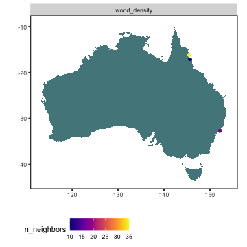
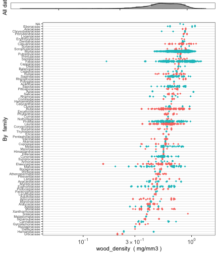
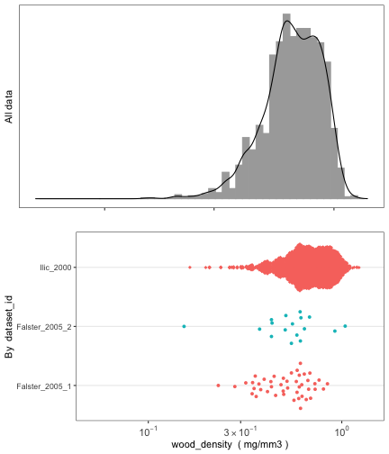

The austraits package is designed to aid users in
accessing data from AusTraits, a curated plant
trait database for the Australian flora. This package contains several
core functions to wrangle and visualise data. Below, we include a
tutorial to illustrate how to use these functions in greater detail.
Note that we are using a reduced subset of v.3.0.2, so the version number and number of records and species will not be match your values
austraits is still under development. To install the
current version from GitHub:
#install.packages("remotes")
remotes::install_github("traitecoevo/austraits", dependencies = TRUE, upgrade = "ask")
# Load the austraits package
library(austraits)By default, load_austraits will download AusTraits to a
specified path e.g. data/austraits and will reload it from
this location in the future. You can set update = TRUE so
the austrait versions are downloaded fresh from Zenodo. Note that
load_austraits will happily accept a DOI of a particular
version.
austraits <- load_austraits(version = "3.0.2", path = "data/austraits")You can check out different versions and their associated DOI of AusTraits by using:
get_versions(path = "data/austraits")The AusTraits object is a very long list with various of
elements. If you are not familiar with working with lists in R, we
recommend having a quick look at this tutorial. To
learn more about the structure of austraits, check out the
structure
of the database.
austraits#> This is version 0.0.0.900 of austraits!
#>
#> This object contains a total of 5859 records for 1245 species and 33 traits.
#>
#> This object is a 'list' with the following components:
#>
#> - `traits`: A table containing measurements of plant traits.
#> - `sites`: A table containing observations of site characteristics associated with information in `traits`. Cross referencing between the two dataframes is possible using combinations of the variables `dataset_id`, `site_name`.
#> - `contexts`: A table containing observations of contextual characteristics associated with information in `traits`. Cross referencing between the two dataframes is possible using combinations of the variables `dataset_id`, `context_name`.
#> - `methods`: A table containing details on methods with which data were collected, including time frame and source.
#> - `excluded_data`: A table of data that did not pass quality test and so were excluded from the master dataset.
#> - `taxa`: A table containing details on taxa associated with information in `traits`. This information has been sourced from the APC (Australian Plant Census) and APNI (Australian Plant Names Index) and is released under a CC-BY3 license.
#> - `definitions`: A copy of the definitions for all tables and terms. Information included here was used to process data and generate any documentation for the study.
#> - `sources`: Bibtex entries for all primary and secondary sources in the compilation.
#> - `contributors`: A table of people contributing to each study.
#> - `taxonomic_updates`: A table of all taxonomic changes implemented in the construction of AusTraits. Changes are determined by comapring against the APC (Australian Plant Census) and APNI (Australian Plant Names Index).
#> - `build_info`: A description of the computing environment used to create this version of the dataset, including version number, git commit and R session_info.
#>
#> To access a component, try using the $ e.g. austraits$traitsAusTraits contains 33 plant traits. Check out definitions of the traits to learn more about how each trait is defined.
Have a look at what trait or taxa we have with:
summarise_austraits(austraits, "trait_name") %>% head()#> trait_name n_records n_dataset n_taxa percent_total
#> branch_mass_fraction 45 1 45 0.007680
#> fire_cued_seeding 5 1 5 0.000853
#> fire_response 73 2 72 0.012500
#> flowering_time 31 1 31 0.005290
#> huber_value 193 2 57 0.032900
#> leaf_angle 38 1 38 0.006490
summarise_austraits(austraits, "family") %>% head()#> family n_records n_dataset n_taxa percent_total
#> Acanthaceae 1 1 1 0.000171
#> Akaniaceae 3 1 1 0.000512
#> Anacardiaceae 20 2 7 0.003410
#> Annonaceae 15 2 5 0.002560
#> Apiaceae 17 1 2 0.002900
#> Apocynaceae 32 3 9 0.005460
summarise_austraits(austraits, "genus") %>% head()#> genus n_records n_dataset n_taxa percent_total
#> Acacia 184 4 77 0.031400
#> Aceratium 5 1 3 0.000854
#> Ackama 10 1 2 0.001710
#> Acradenia 3 1 2 0.000512
#> Acronychia 21 3 7 0.003590
#> Actinotus 10 1 1 0.001710Interested in a specific trait? Try lookup_trait
lookup_trait(austraits, "leaf") %>% head()#> [1] "leaf_angle" "leaf_area" "leaf_compoundness"
#> [4] "leaf_N_per_dry_mass" "specific_leaf_area" "leaf_cell_wall_fraction"In most cases, users would like to extract a subset of
austraits for their own research
purposes.extract_dataset subsets a particular study,
whereas extract_traitsubsets by certain traits. Note that
the other tables and elements of the AusTraits data are extracted too,
not just the main trait table. See ?extract_dataset and
?extract_trait for more details
Filtering one particular study and assigning it to an object
subset_data <- extract_dataset(austraits, "Falster_2005_2")
subset_data$traits %>% head()#> # A tibble: 6 × 12
#> dataset_id taxon_name site_name context_name observation_id trait_name value unit date
#> <chr> <chr> <chr> <chr> <chr> <chr> <chr> <chr> <chr>
#> 1 Falster_20… Acacia lo… Myall_La… <NA> Falster_2005_… fire_resp… fire… <NA> 2002…
#> 2 Falster_20… Acacia lo… Myall_La… <NA> Falster_2005_… huber_val… 0.00… mm2_… 2002…
#> 3 Falster_20… Acacia lo… Myall_La… <NA> Falster_2005_… huber_val… 0.00… mm2_… 2002…
#> 4 Falster_20… Acacia lo… Myall_La… <NA> Falster_2005_… huber_val… 0.00… mm2_… 2002…
#> 5 Falster_20… Acacia lo… Myall_La… <NA> Falster_2005_… huber_val… 0.00… mm2_… 2002…
#> 6 Falster_20… Acacia lo… Myall_La… <NA> Falster_2005_… leaf_area 1761 mm2 2002…
#> # … with 3 more variables: value_type <fct>, replicates <chr>, original_name <chr>
Filtering **multiple studies by two different lead authors** and assigning it to an object
```r
subset_multi_studies <- extract_dataset(austraits,
dataset_id = c("Thompson_2001","Ilic_2000"))
subset_multi_studies$traits %>% head()#> # A tibble: 6 × 12
#> dataset_id taxon_name site_name context_name observation_id trait_name value unit date
#> <chr> <chr> <chr> <chr> <chr> <chr> <chr> <chr> <chr>
#> 1 Ilic_2000 Acacia acr… <NA> <NA> Ilic_2000_0001 wood_dens… 0.904 mg/m… <NA>
#> 2 Ilic_2000 Acacia acu… <NA> <NA> Ilic_2000_0002 wood_dens… 0.895 mg/m… <NA>
#> 3 Ilic_2000 Acacia acu… <NA> <NA> Ilic_2000_0003 wood_dens… 1.008 mg/m… <NA>
#> 4 Ilic_2000 Acacia ads… <NA> <NA> Ilic_2000_0004 wood_dens… 0.887 mg/m… <NA>
#> 5 Ilic_2000 Acacia amp… <NA> <NA> Ilic_2000_0005 wood_dens… 0.568 mg/m… <NA>
#> 6 Ilic_2000 Acacia ane… <NA> <NA> Ilic_2000_0006 wood_dens… 1.035 mg/m… <NA>
#> # … with 3 more variables: value_type <fct>, replicates <chr>, original_name <chr>
Filtering **multiple studies by same lead author** (e.g. Falster) and assigning it to an object.
```r
# First, we need to identify all studies with an id that includes "Falster"
( dataset_ids <- austraits$methods$dataset_id %>% unique() %>% subset(., grepl("Falster",.))) #> [1] "Falster_2003" "Falster_2005_1" "Falster_2005_2"
# Then we extract
data_falster_studies <- extract_dataset(austraits, dataset_ids)
data_falster_studies$traits %>% head()#> # A tibble: 6 × 12
#> dataset_id taxon_name site_name context_name observation_id trait_name value unit date
#> <chr> <chr> <chr> <chr> <chr> <chr> <chr> <chr> <chr>
#> 1 Falster_20… Acacia my… Ku-ring-… <NA> Falster_2003_… leaf_angle 66.1 degr… <NA>
#> 2 Falster_20… Acacia my… Ku-ring-… <NA> Falster_2003_… leaf_area 319 mm2 <NA>
#> 3 Falster_20… Acacia my… Ku-ring-… <NA> Falster_2003_… leaf_comp… simp… <NA> <NA>
#> 4 Falster_20… Acacia su… Ku-ring-… <NA> Falster_2003_… leaf_angle 71.7 degr… <NA>
#> 5 Falster_20… Acacia su… Ku-ring-… <NA> Falster_2003_… leaf_area 562 mm2 <NA>
#> 6 Falster_20… Acacia su… Ku-ring-… <NA> Falster_2003_… leaf_comp… simp… <NA> <NA>
#> # … with 3 more variables: value_type <fct>, replicates <chr>, original_name <chr>
# By family
proteaceae <- extract_taxa(austraits, family = "Proteaceae")
# Checking that only taxa in Proteaceae have been extracted
proteaceae$taxa$family %>% unique()#> [1] "Proteaceae"
# By genus
acacia <- extract_taxa(austraits, genus = "Acacia")
# Checking that only taxa in Acacia have been extracted
acacia$traits$taxon_name %>% unique() %>% head()#> [1] "Acacia myrtifolia" "Acacia suaveolens" "Acacia floribunda" "Acacia celsa"
#> [5] "Acacia longifolia" "Acacia terminalis"Filtering one particular trait and assigning it to an object
data_wood_dens <- extract_trait(austraits, "wood_density")
head(data_wood_dens$traits)#> # A tibble: 6 × 12
#> dataset_id taxon_name site_name context_name observation_id trait_name value unit date
#> <chr> <chr> <chr> <chr> <chr> <chr> <dbl> <chr> <chr>
#> 1 Falster_20… Acacia ce… Atherton <NA> Falster_2005_… wood_dens… 0.498 mg/m… 2002…
#> 2 Falster_20… Acronychi… Atherton <NA> Falster_2005_… wood_dens… 0.525 mg/m… 2002…
#> 3 Falster_20… Alphitoni… Atherton <NA> Falster_2005_… wood_dens… 0.413 mg/m… 2002…
#> 4 Falster_20… Glochidio… Atherton <NA> Falster_2005_… wood_dens… 0.566 mg/m… 2002…
#> 5 Falster_20… Homalanth… Atherton <NA> Falster_2005_… wood_dens… 0.319 mg/m… 2002…
#> 6 Falster_20… Melicope … Atherton <NA> Falster_2005_… wood_dens… 0.346 mg/m… 2002…
#> # … with 3 more variables: value_type <fct>, replicates <chr>, original_name <chr>Combining lookup_trait with extract_trait
to obtain all traits with ‘leaf’ in the trait name and
assigning it to an object. Note we use the . notation to
pass on the lookup_trait results to
extract_trait
data_leaf <- lookup_trait(austraits, "leaf") %>% extract_trait(austraits, .)
head(data_leaf$traits)#> # A tibble: 6 × 12
#> dataset_id taxon_name site_name context_name observation_id trait_name value unit date
#> <chr> <chr> <chr> <chr> <chr> <chr> <dbl> <chr> <chr>
#> 1 Falster_20… Acacia my… Ku-ring-… <NA> Falster_2003_… leaf_angle 66.1 degr… <NA>
#> 2 Falster_20… Acacia my… Ku-ring-… <NA> Falster_2003_… leaf_area 319 mm2 <NA>
#> 3 Falster_20… Acacia my… Ku-ring-… <NA> Falster_2003_… leaf_comp… NA <NA> <NA>
#> 4 Falster_20… Acacia su… Ku-ring-… <NA> Falster_2003_… leaf_angle 71.7 degr… <NA>
#> 5 Falster_20… Acacia su… Ku-ring-… <NA> Falster_2003_… leaf_area 562 mm2 <NA>
#> 6 Falster_20… Acacia su… Ku-ring-… <NA> Falster_2003_… leaf_comp… NA <NA> <NA>
#> # … with 3 more variables: value_type <fct>, replicates <chr>, original_name <chr>Once users have extracted the data they want, they may want to merge
other study details into the main traits dataframe for
their analyses. For example, users may require taxonomic information for
a phylogenetic analysis. This is where the join_ functions
come in. There are five join_ functions in total, each
designed to append specific information from other tables and elements
in the austraits object. Their suffixes refer to the type
of information that is joined, e.g. join_taxonomy appends
taxonomic information to the traits dataframe. See
?join_all for more details.
#> # A tibble: 6 × 16
#> dataset_id taxon_name site_name context_name observation_id trait_name value unit date
#> <chr> <chr> <chr> <chr> <chr> <chr> <dbl> <chr> <chr>
#> 1 Falster_20… Acacia my… Ku-ring-… <NA> Falster_2003_… leaf_angle 66.1 degr… <NA>
#> 2 Falster_20… Acacia my… Ku-ring-… <NA> Falster_2003_… leaf_area 319 mm2 <NA>
#> 3 Falster_20… Acacia my… Ku-ring-… <NA> Falster_2003_… leaf_comp… NA <NA> <NA>
#> 4 Falster_20… Acacia su… Ku-ring-… <NA> Falster_2003_… leaf_angle 71.7 degr… <NA>
#> 5 Falster_20… Acacia su… Ku-ring-… <NA> Falster_2003_… leaf_area 562 mm2 <NA>
#> 6 Falster_20… Acacia su… Ku-ring-… <NA> Falster_2003_… leaf_comp… NA <NA> <NA>
#> # … with 7 more variables: value_type <fct>, replicates <chr>, original_name <chr>,
#> # family <chr>, genus <chr>, taxonRank <chr>, acceptedNameUsageID <chr>#> # A tibble: 6 × 16
#> dataset_id taxon_name site_name context_name observation_id trait_name value unit date
#> <chr> <chr> <chr> <chr> <chr> <chr> <dbl> <chr> <chr>
#> 1 Falster_20… Acacia my… Ku-ring-… <NA> Falster_2003_… leaf_angle 66.1 degr… <NA>
#> 2 Falster_20… Acacia my… Ku-ring-… <NA> Falster_2003_… leaf_area 319 mm2 <NA>
#> 3 Falster_20… Acacia my… Ku-ring-… <NA> Falster_2003_… leaf_comp… NA <NA> <NA>
#> 4 Falster_20… Acacia su… Ku-ring-… <NA> Falster_2003_… leaf_angle 71.7 degr… <NA>
#> 5 Falster_20… Acacia su… Ku-ring-… <NA> Falster_2003_… leaf_area 562 mm2 <NA>
#> 6 Falster_20… Acacia su… Ku-ring-… <NA> Falster_2003_… leaf_comp… NA <NA> <NA>
#> # … with 7 more variables: value_type <fct>, replicates <chr>, original_name <chr>,
#> # methods <chr>, year_collected_start <chr>, year_collected_end <chr>,
#> # collection_type <chr>#> # A tibble: 6 × 14
#> dataset_id taxon_name site_name context_name observation_id trait_name value unit date
#> <chr> <chr> <chr> <chr> <chr> <chr> <dbl> <chr> <chr>
#> 1 Falster_20… Acacia my… Ku-ring-… <NA> Falster_2003_… leaf_angle 66.1 degr… <NA>
#> 2 Falster_20… Acacia my… Ku-ring-… <NA> Falster_2003_… leaf_area 319 mm2 <NA>
#> 3 Falster_20… Acacia my… Ku-ring-… <NA> Falster_2003_… leaf_comp… NA <NA> <NA>
#> 4 Falster_20… Acacia su… Ku-ring-… <NA> Falster_2003_… leaf_angle 71.7 degr… <NA>
#> 5 Falster_20… Acacia su… Ku-ring-… <NA> Falster_2003_… leaf_area 562 mm2 <NA>
#> 6 Falster_20… Acacia su… Ku-ring-… <NA> Falster_2003_… leaf_comp… NA <NA> <NA>
#> # … with 5 more variables: value_type <fct>, replicates <chr>, original_name <chr>,
#> # `latitude (deg)` <chr>, `longitude (deg)` <chr>#> # A tibble: 6 × 12
#> dataset_id taxon_name site_name context_name observation_id trait_name value unit date
#> <chr> <chr> <chr> <chr> <chr> <chr> <dbl> <chr> <chr>
#> 1 Falster_20… Acacia my… Ku-ring-… <NA> Falster_2003_… leaf_angle 66.1 degr… <NA>
#> 2 Falster_20… Acacia my… Ku-ring-… <NA> Falster_2003_… leaf_area 319 mm2 <NA>
#> 3 Falster_20… Acacia my… Ku-ring-… <NA> Falster_2003_… leaf_comp… NA <NA> <NA>
#> 4 Falster_20… Acacia su… Ku-ring-… <NA> Falster_2003_… leaf_angle 71.7 degr… <NA>
#> 5 Falster_20… Acacia su… Ku-ring-… <NA> Falster_2003_… leaf_area 562 mm2 <NA>
#> 6 Falster_20… Acacia su… Ku-ring-… <NA> Falster_2003_… leaf_comp… NA <NA> <NA>
#> # … with 3 more variables: value_type <fct>, replicates <chr>, original_name <chr>#> # A tibble: 6 × 22
#> dataset_id taxon_name site_name context_name observation_id trait_name value unit date
#> <chr> <chr> <chr> <chr> <chr> <chr> <dbl> <chr> <chr>
#> 1 Falster_20… Acacia my… Ku-ring-… <NA> Falster_2003_… leaf_angle 66.1 degr… <NA>
#> 2 Falster_20… Acacia my… Ku-ring-… <NA> Falster_2003_… leaf_area 319 mm2 <NA>
#> 3 Falster_20… Acacia my… Ku-ring-… <NA> Falster_2003_… leaf_comp… NA <NA> <NA>
#> 4 Falster_20… Acacia su… Ku-ring-… <NA> Falster_2003_… leaf_angle 71.7 degr… <NA>
#> 5 Falster_20… Acacia su… Ku-ring-… <NA> Falster_2003_… leaf_area 562 mm2 <NA>
#> 6 Falster_20… Acacia su… Ku-ring-… <NA> Falster_2003_… leaf_comp… NA <NA> <NA>
#> # … with 13 more variables: value_type <fct>, replicates <chr>, original_name <chr>,
#> # `latitude (deg)` <chr>, `longitude (deg)` <chr>, family <chr>, genus <chr>,
#> # taxonRank <chr>, acceptedNameUsageID <chr>, methods <chr>, year_collected_start <chr>,
#> # year_collected_end <chr>, collection_type <chr>plot_site_locations graphically summarises where trait
data was collected from and how much data is available. The legend
refers to the number of neighbouring points: the warmer the colour, the
more data that is available. This function only works for studies that
are geo-referenced. Users must first use join_sites to
append latitude and longitude information into the trait dataframe
before plotting
data_wood_dens <- data_wood_dens %>% join_sites()
plot_site_locations(data_wood_dens$traits)
plot_trait_distribution creates histograms and beeswarm plots for
specific traits to help users visualise the variance of the data. Users
can specify whether to create separate beeswarm plots at the level of
taxonomic family or for each dataset_id
austraits %>% plot_trait_distribution_beeswarm("wood_density", "family")
austraits %>% plot_trait_distribution_beeswarm("wood_density", "dataset_id")
The table of traits in AusTraits comes in long format, where data for
all traits are in two columns called trait_name and
value. You can convert this to wide format, where each
trait is in a separate column, using the function
trait_pivot_wider. This will produce 5 separate lists
(value, unit, date,
value_type and replicates). The trait values
are stored in the value list.
Note that in some cases, there are multiple observations for
some traits, e.g. huber values. This can prevent pivoting from long
format to wide. In these circumstances, we suggest using
bind_trait_values which joins multiple observations
together into a string.
data_wide_bound <- data_falster_studies$traits %>%
bind_trait_values() %>% # Joining multiple obs with `--`
trait_pivot_wider() #Pivot wide
data_wide_bound$value # The trait values table#> # A tibble: 103 × 17
#> dataset_id taxon_name site_name context_name observation_id leaf_angle leaf_area
#> <chr> <chr> <chr> <chr> <chr> <chr> <chr>
#> 1 Falster_2003 Acacia myrtifol… Ku-ring-… <NA> Falster_2003_… 66.1 319
#> 2 Falster_2003 Acacia suaveole… Ku-ring-… <NA> Falster_2003_… 71.7 562
#> 3 Falster_2003 Angophora hispi… Ku-ring-… <NA> Falster_2003_… 50.8 1590
#> 4 Falster_2003 Banksia margina… Ku-ring-… <NA> Falster_2003_… 53.1 198
#> 5 Falster_2003 Banksia oblongi… Ku-ring-… <NA> Falster_2003_… 45 1061
#> 6 Falster_2003 Boronia pinnata Ku-ring-… <NA> Falster_2003_… 43.9 151
#> 7 Falster_2003 Conospermum lon… Ku-ring-… <NA> Falster_2003_… 72.3 1363
#> 8 Falster_2003 Epacris pulchel… Ku-ring-… <NA> Falster_2003_… 42.9 5
#> 9 Falster_2003 Eriostemon aust… Ku-ring-… <NA> Falster_2003_… 62.1 102
#> 10 Falster_2003 Corymbia gummif… Ku-ring-… <NA> Falster_2003_… 59.3 1111
#> # … with 93 more rows, and 10 more variables: leaf_compoundness <chr>,
#> # branch_mass_fraction <chr>, huber_value <chr>, leaf_N_per_dry_mass <chr>,
#> # seed_mass <chr>, specific_leaf_area <chr>, wood_density <chr>, fire_response <chr>,
#> # plant_height <chr>, original_name <chr>
# Check out the 'bounded' trait values
data_wide_bound$value %>%
select(-c(1:5)) %>% #Excluding values that are not traits so we can see which columns contains bounded values
filter_all(.vars_predicate = any_vars(str_detect(., "--"))) #> # A tibble: 55 × 12
#> leaf_angle leaf_area leaf_compoundness branch_mass_fraction huber_value leaf_N_per_dry_…
#> <chr> <chr> <chr> <chr> <chr> <chr>
#> 1 <NA> 2786 <NA> 0.67 0.00033590… 21.4
#> 2 <NA> 14302 <NA> 0.48 0.00013227… 24.3
#> 3 <NA> 6820 <NA> 0.42 0.00023041… 16.3
#> 4 <NA> 3209 <NA> 0.41 0.00050175… 13.7
#> 5 <NA> 10682 <NA> 0.47 0.00046816… 22
#> 6 <NA> 6955 <NA> 0.58 0.00023803… 26.8
#> 7 <NA> 5228 <NA> 0.58 0.00059311… 16.4
#> 8 <NA> 6806 <NA> 0.42 0.00016644… 15.4
#> 9 <NA> 11157 <NA> 0 0.00020092… 17.9
#> 10 <NA> 3401 <NA> 0.34 0.00023142… 11.1
#> # … with 45 more rows, and 6 more variables: seed_mass <chr>, specific_leaf_area <chr>,
#> # wood_density <chr>, fire_response <chr>, plant_height <chr>, original_name <chr>If you would like to revert the bounded trait values, you have to use
trait_pivot_longer first, then:
data_wide_bound %>%
trait_pivot_longer() %>%
separate_trait_values(., austraits$definitions)#> # A tibble: 691 × 12
#> dataset_id taxon_name site_name context_name observation_id trait_name value unit date
#> <chr> <chr> <chr> <chr> <chr> <chr> <chr> <chr> <chr>
#> 1 Falster_2… Acacia my… Ku-ring-… <NA> Falster_2003_… leaf_angle 66.1 degr… <NA>
#> 2 Falster_2… Acacia my… Ku-ring-… <NA> Falster_2003_… leaf_area 319 mm2 <NA>
#> 3 Falster_2… Acacia my… Ku-ring-… <NA> Falster_2003_… leaf_comp… simp… <NA> <NA>
#> 4 Falster_2… Acacia su… Ku-ring-… <NA> Falster_2003_… leaf_angle 71.7 degr… <NA>
#> 5 Falster_2… Acacia su… Ku-ring-… <NA> Falster_2003_… leaf_area 562 mm2 <NA>
#> 6 Falster_2… Acacia su… Ku-ring-… <NA> Falster_2003_… leaf_comp… simp… <NA> <NA>
#> 7 Falster_2… Angophora… Ku-ring-… <NA> Falster_2003_… leaf_angle 50.8 degr… <NA>
#> 8 Falster_2… Angophora… Ku-ring-… <NA> Falster_2003_… leaf_area 1590 mm2 <NA>
#> 9 Falster_2… Angophora… Ku-ring-… <NA> Falster_2003_… leaf_comp… simp… <NA> <NA>
#> 10 Falster_2… Banksia m… Ku-ring-… <NA> Falster_2003_… leaf_angle 53.1 degr… <NA>
#> # … with 681 more rows, and 3 more variables: value_type <fct>, replicates <chr>,
#> # original_name <chr>Alternatively, if you don’t want to bind the trait values, you can
give summarise_trait_means a go, which computes means with
multiple observations. Note that this method condenses the traits table
and you won’t be able to revert it back unless you
load_austraits again
data_wide_summarised <- data_falster_studies$traits %>%
summarise_trait_means() %>%
trait_pivot_wider()
data_wide_summarised$value %>% head()#> # A tibble: 6 × 17
#> dataset_id taxon_name site_name context_name observation_id leaf_angle leaf_area
#> <chr> <chr> <chr> <chr> <chr> <dbl> <dbl>
#> 1 Falster_2003 Acacia myrtifolia Ku-ring-… <NA> Falster_2003_… 66.1 319
#> 2 Falster_2003 Acacia suaveolens Ku-ring-… <NA> Falster_2003_… 71.7 562
#> 3 Falster_2003 Angophora hispida Ku-ring-… <NA> Falster_2003_… 50.8 1590
#> 4 Falster_2003 Banksia marginata Ku-ring-… <NA> Falster_2003_… 53.1 198
#> 5 Falster_2003 Banksia oblongif… Ku-ring-… <NA> Falster_2003_… 45 1061
#> 6 Falster_2003 Boronia pinnata Ku-ring-… <NA> Falster_2003_… 43.9 151
#> # … with 10 more variables: leaf_compoundness <dbl>, branch_mass_fraction <dbl>,
#> # leaf_N_per_dry_mass <dbl>, seed_mass <dbl>, specific_leaf_area <dbl>,
#> # wood_density <dbl>, huber_value <dbl>, fire_response <dbl>, plant_height <dbl>,
#> # original_name <chr>